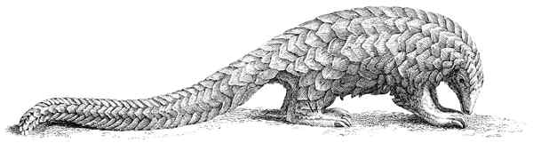

A pangolin, also known as scaly anteater, is a mammal of the order Pholidota. There are eight species. Pangolins have large keratin scales covering their skin and are the only mammals with this adaptation.
Pangolins are nocturnal animals, and use their well-developed sense of smell to find insects. The long-tailed pangolin is also active by day. Pangolins spend most of the daytime sleeping, curled up into a ball.
 Text lifted from Wikipedia, image licensed from iStockPhoto